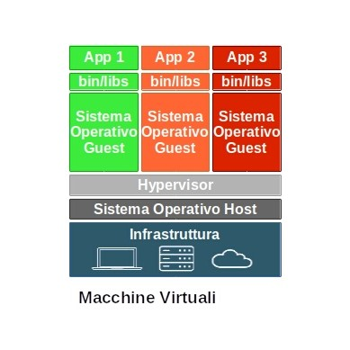
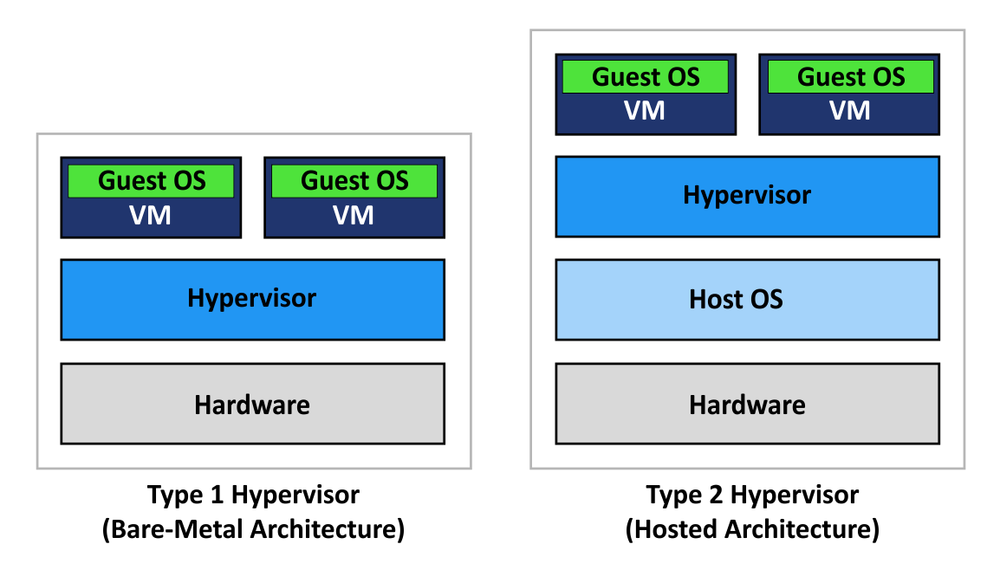

Le Macchine Virtuali (o Virtual Machine) sono dei computer separati che possono esistere sopra so stesso Hardware allo stesso momento (come da immagine).
Ma com'è possibile tutto ciò? Grazie alla virtualizzazione, processo che consente a tutti gli effetti di simulare hardware e funzionalità di esso. La virtualizzazione però richiede delle risorse per essere eseguita, poichè se la macchina crede di avere un processore con un determinato numero di core o un determinato quantitativo di ram, questi ultimi devono essere presenti e devono essere "prestati" alla VM (anche dinamicamente in base alla richiesta).
Il paragrafo precedente si è concluso con la richiesta di Hardware da parte delle macchine virtuali, tale richiesta viene soddisfatta dall'Hypervisor.
L'Hypervisor è un software indispensabile per il corretto funzionamento delle virtual machine poichè si occupa si gestire l'Hardware e di separare quello fisico da quello virtuale.
Gli Hypervisor si possono dividere in 2 tipologie principali:

Tipo 1:
Questo tipo di Hypervisor non è accessibile tramite software come VirtualBox o VM Ware (mentre è utilizzabile con Hyper-V e KVM).
Utilizza una virtualizzazione che sfrutta direttamente l'hardware,
infatti si pone tra il sistema operativo e l'Hardware
(che viene gestito proprio dall'Hypervisor e non dal Kernel utilizzato dall'OS).
Questo tipo di Virtualizzazione viene definita Bare Metal poiche le
performance dell'HW nel sistema operativo virutalizzato sono al pari di quelle su un sistema host
(la perdita di performance è circa del ~3/5%).
Tipo 2:
Questo tipo di Hypervisor invece è più comune infatti è quello che sfruttano i software installabili comunemente,
VirtualBox e VM Ware sono esempi famosi (che abbiamo anche utlizzato).
Il compito di questa tipologia è lo stesso del Tipo 1, la differenza principale sono le performance,
poichè viene eseguito sopra al sistema operativo Host (cioè quello che effettivamente gestisce l'Hardware fisico)
e quindi l'Hypervisor deve fare delle richieste all'OS e non ha accesso diretto all'HW.